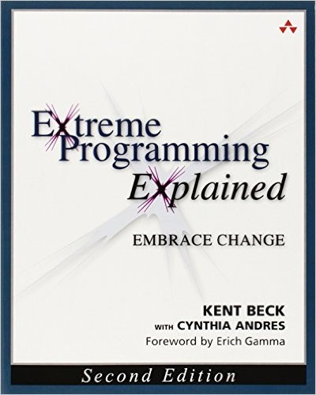

Extreme Programming Explained
Embrace Change
Second Edition
Kent Beck
with Cynthia Andres
We don’t practice Extreme Programming …
or do we?
Continuous integration, automated tests, user stories: we already use ideas XP made mainstream in the late 1990s. Here is what we gain by using them on purpose.
Our values,
the XP way
Quality is built in from the first line
Cutting quality never buys speed. Test first, improve the design a little every day, and the code stays safe to change.
Test-First Programming · Incremental Design
Guardrails for the AI era
AI writes code faster than we can review it. Tests written first prove it works, and pairing puts a second mind on hard decisions.
Pair Programming · Whole Team · Stories
Short feedback loops
Find mistakes in minutes, not weeks: integrate every couple of hours, keep the build under ten minutes, ship something every week.
Continuous Integration · Ten-Minute Build
What is XP?
XP is a style of software development that focuses on the excellent application of programming techniques, clear communication, and teamwork.
Values
A philosophy of software development based on five values.
Communication · Feedback · Simplicity · Courage · Respect
Practices
A body of practices proven useful in improving software development.
They complement each other and express the values.
Principles
Intellectual techniques for translating the values into practice.
For when no practice fits your particular problem.
Community
People who share these values and many of the same practices.
A lightweight methodology for small-to-medium-sized teams developing software in the face of vague or rapidly changing requirements.
Values
XP embraces five values to guide development: communication, simplicity, feedback, courage, and respect.
Select + Learn more on any value to open the details.
Communication
Simplicity
Feedback
Courage
Respect
Other important values include safety, security, predictability, and quality-of-life.
Communication
What matters most in team software development is communication.
- It is not behind every problem. Sometimes a problem is caused by a lack of knowledge rather than a lack of communication.
- It is how problems get solved. Once you find a surprising problem, communication can help you solve it.
- It builds the team. Communication is important for creating a sense of team and effective cooperation.
XP practices that build it: Sit Together · Whole Team · Pair Programming · Informative Workspace
Simplicity
Simplicity is the most intensely intellectual of the XP values.
- It is hard work. Making a system simple enough to gracefully solve only today’s problem takes real effort.
- It depends on context. Simplicity only makes sense in context.
- It works with communication. Better communication removes unneeded or deferrable requirements from today’s concerns, and a simpler system gives you that much less to communicate about.
XP practices that build it: Incremental Design · Stories
Feedback
Change is inevitable, but change creates the need for feedback.
- It favours improvement over perfection. We use feedback to get closer to our goals rather than expecting instant perfection.
- It should be fast. XP teams generate as much feedback as they can handle, as quickly as possible. The sooner you know, the sooner you can adapt.
- It works with the other values. Feedback is a critical part of communication, and the simpler the system, the easier it is to get feedback about it.
XP practices that build it: Test-First Programming · Continuous Integration · Weekly Cycle
Courage
Courage is effective action in the face of fear.
- It can mean acting. If you know what the problem is, do something about it.
- It can mean waiting. If you know there is a problem but not what it is, it takes courage to wait for the real problem to emerge distinctly.
- It works with the other values. Courage alone is dangerous. Speaking truths, pleasant or unpleasant, fosters communication and trust; discarding failing solutions encourages simplicity; seeking real, concrete answers creates feedback.
XP practices that build it: Test-First Programming · Incremental Design · Pair Programming
Respect
Respect lies below the surface of the other four values.
- It means caring about each other. If members of a team don’t care about each other and what they are doing, XP won’t work.
- It means caring about the work. If members of a team don’t care about a project, nothing can save it.
- It works with the other values. Communication, simplicity, feedback and courage all point to respect.
XP practices that build it: Whole Team · Sit Together · Energized Work